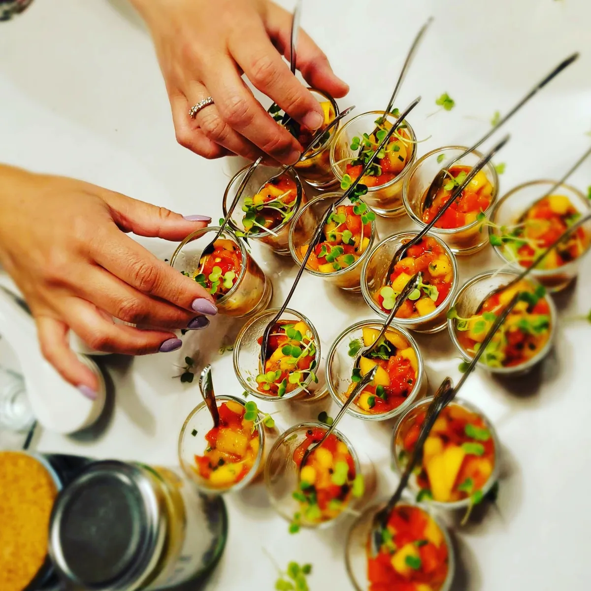
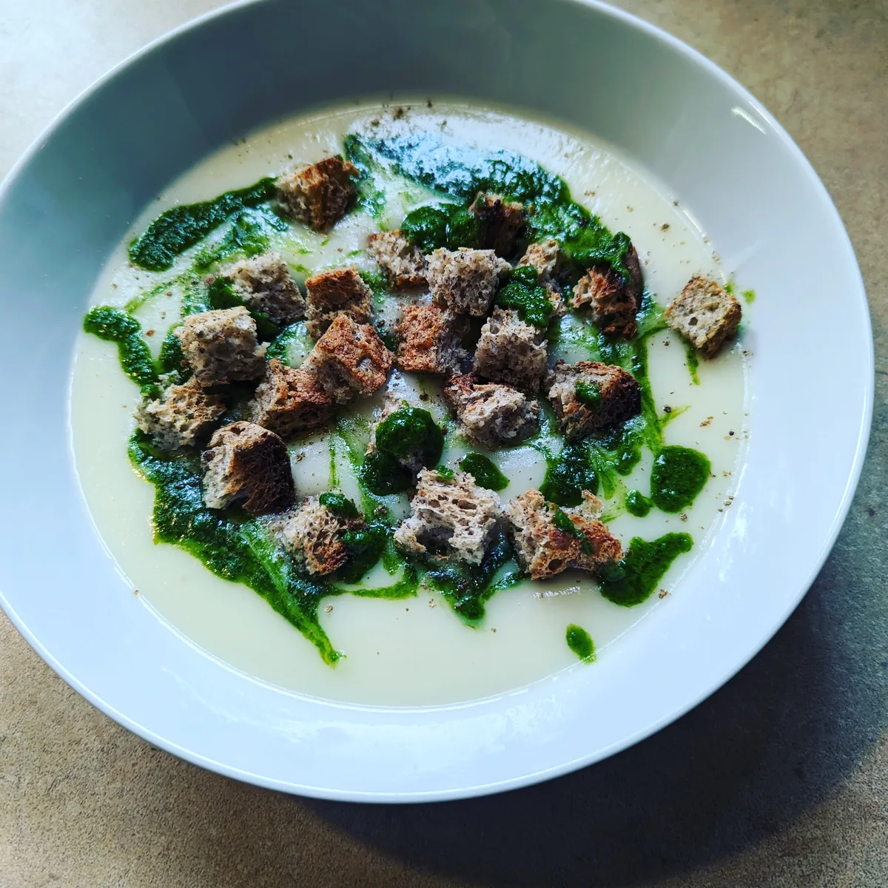
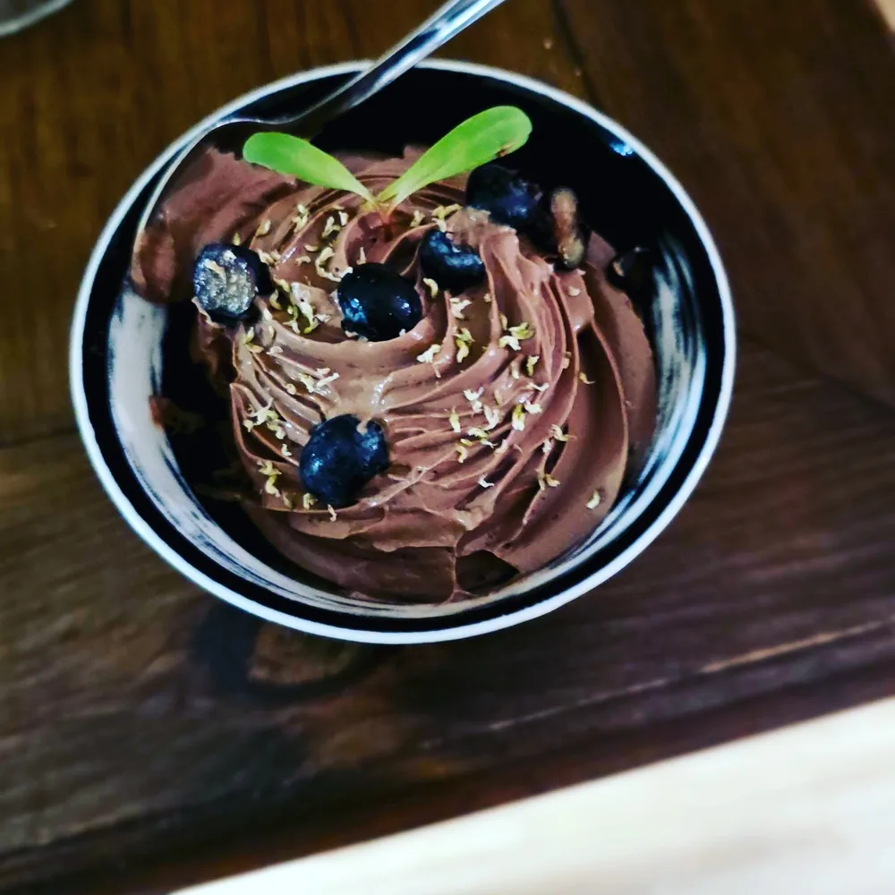
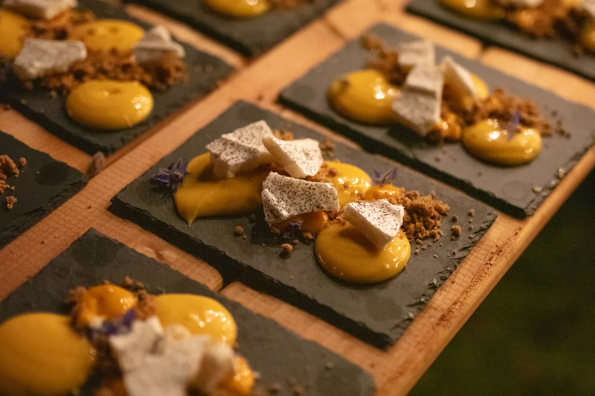

Créations
Ce que la forêt murmure,
ce que les champs offrent.
Un aperçu des assiettes
Chaque menu est composé sur mesure selon la saison, les produits disponibles et vos préférences — il n'y a pas de carte fixe. Voici un aperçu de créations récentes, entièrement sans gluten.

Dressage signature — pièce grillée, jus corsé et légumes racines.

Bouchée froide, fleurs comestibles et herbes du jardin.

Potage de saison, croûtons maison et pistou vert.
Bouchées en verrines pour un service cocktail.

Mousse gourmande, petits fruits sauvages du Nord.

Dessert de service, micropousses et petits fruits.

Bouchées sur ardoise, coulis de fruits et tuile croustillante, fleurs comestibles.
Un aperçu du menu
Extraits de menus déjà servis, réunis ici par temps de repas pour vous donner une idée du déroulement d'une soirée — une illustration de l'éventail possible, pas une carte figée : chaque menu est composé sur mesure selon la saison et vos préférences. À valider avec le client : confirmer que la liste et les regroupements ci-dessous restent justes avant publication.
Envie de goûter la forêt, la terre, le vent du Nord ?
Discutons de votre menu sur mesure — allergies, préférences et produits de saison.
Réserver une soirée →